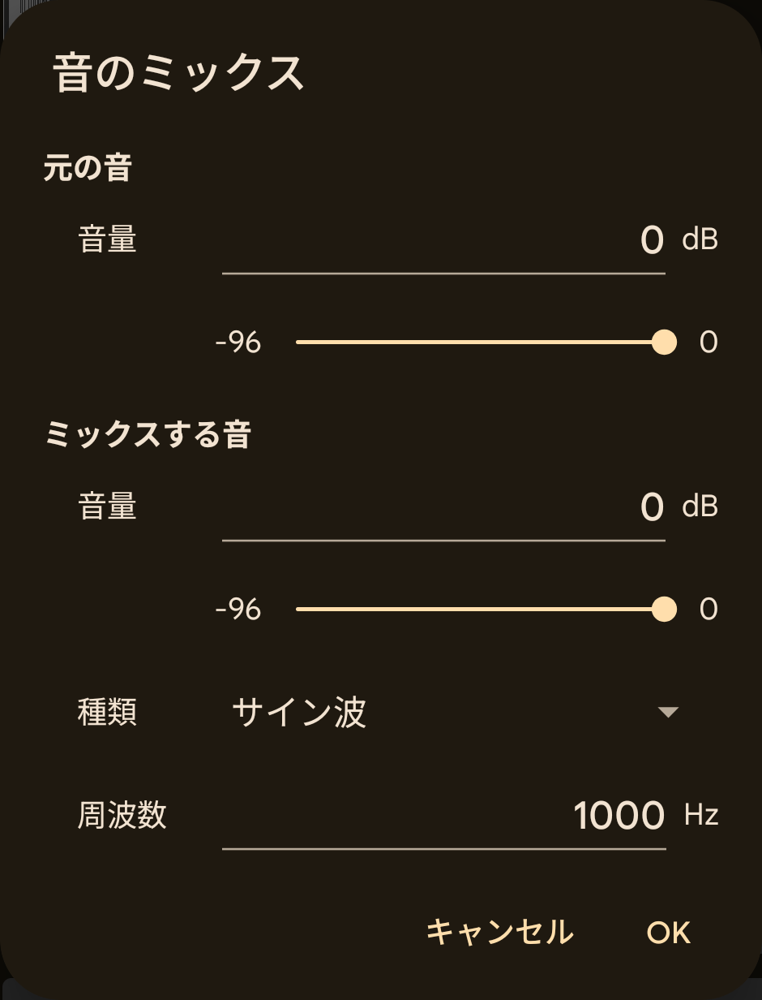
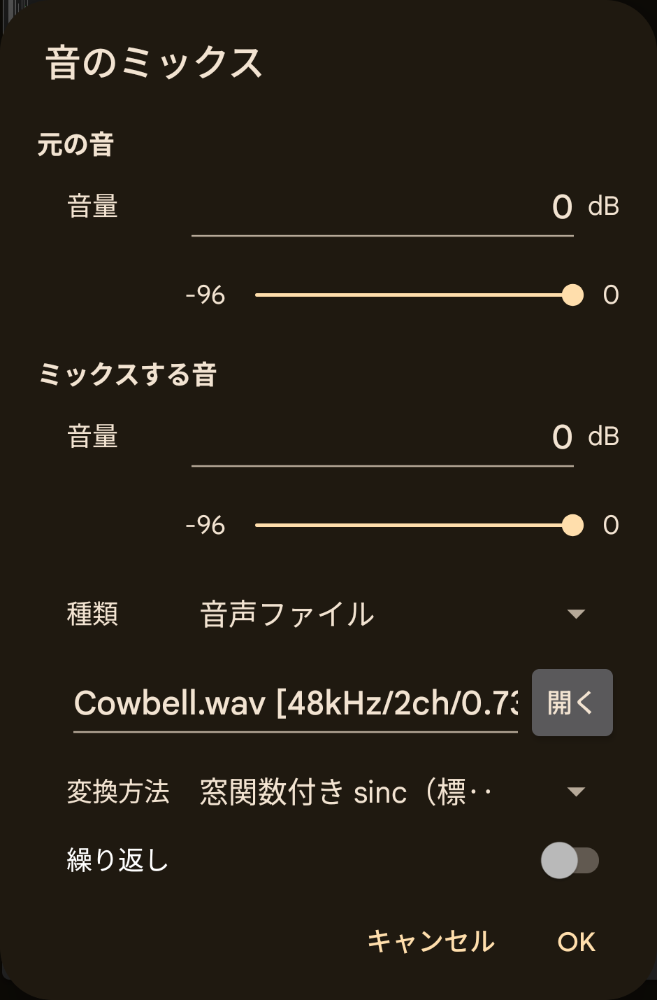
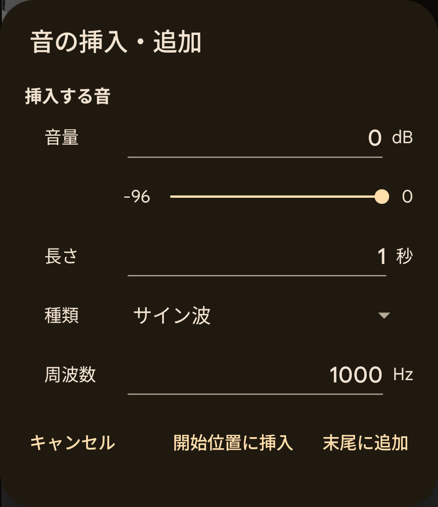
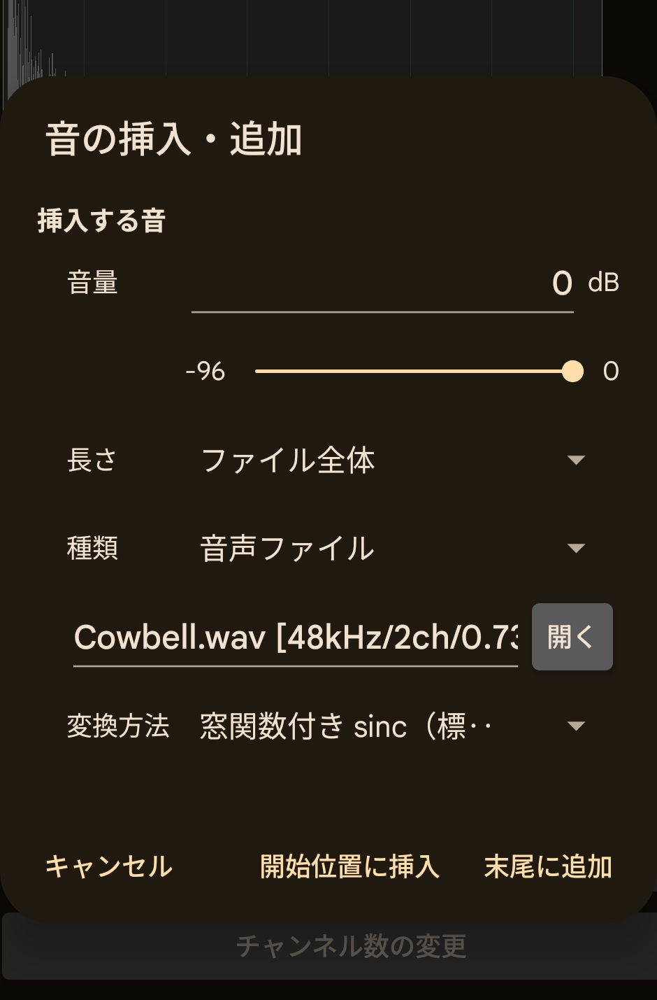
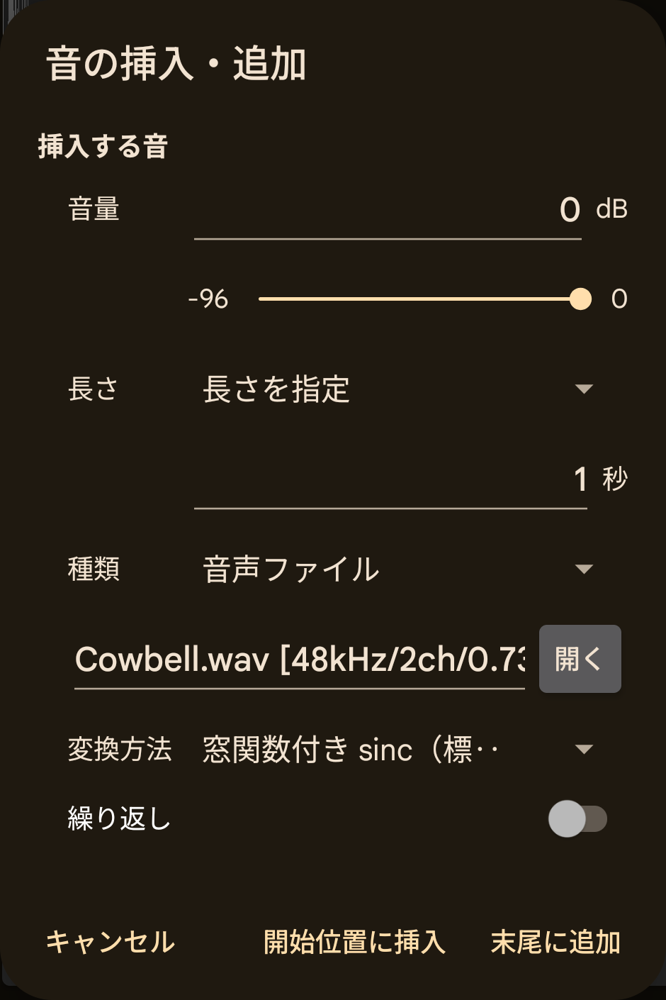

「音の追加」グループ
無音・サイン波・矩形波・別の音声ファイルを、編集中の音声にミックスしたり、開始位置へ挿入・末尾へ追加したりするコマンド群です。コピーバッファは使用せず変更もしません。
音のミックス
現在の選択範囲（開始位置〜終了位置）に、指定した音を合成（ミックス）します。音声データの長さや選択範囲は変わりません。


- 元の音 — 音量：選択範囲にある元の音の音量（
-96〜0dB、初期値0dB）。 - ミックスする音 — 音量：混ぜる音の音量（
-96〜0dB、初期値0dB）。 - 種類：
サイン波（初期値）・矩形波・音声ファイルから選びます。 - L / R スイッチ：有効です。オフにしたチャンネルには「元の音」の音量変更もミックスも行われず、元のまま残ります。
音の挿入・追加
指定した音を、開始位置へ割り込ませて挿入するか、音声データの末尾へ連結して追加します。実行後は、追加した音の範囲全体が選択範囲になります（L / R スイッチは対象外で全チャンネルに適用されます）。



- 種類：
無音（初期値）・サイン波・矩形波・音声ファイルから選びます。 - 音量：無音以外のときに指定します（
-96〜0dB、初期値0dB）。 - 長さ：無音・サイン波・矩形波のときは秒数（小数可、初期値
1秒）を指定します。音声ファイルのときは「ファイル全体」または「長さを指定」を選べます。 - 実行ボタン：ダイアログ下部に キャンセル・開始位置に挿入・末尾に追加 の 3 ボタンが並びます。
足す音の種類ごとの設定
無音（音の挿入・追加のみ）
指定した長さ（秒）の無音を挿入または末尾に追加します。
サイン波 / 矩形波
- 周波数：
0Hz 以上（上限なし、小数可、初期値1000Hz）。 - 振幅は 0 dB で最大（32767）、範囲の先頭から位相 0 で生成されます。ステレオの場合は L と R に同じ波形を入れます。
- 矩形波は帯域制限を行わない理想矩形波です。
音声ファイル
- ファイル選択：行の右端にある 開く ボタンから音声ファイル（wav / mp3 / mp4）を選びます。選んだファイルの名前と音声情報が 1 行で表示され、長い場合は横にスクロールして確認できます。
- チャンネル数：モノラルまたはステレオのみ使用できます（3 チャンネル以上のファイルは使用できません）。編集中の音声とチャンネル数が違う場合は自動で変換されます（モノラル→ステレオは L / R 複製、ステレオ→モノラルは L / R 平均）。
- 変換方法：選んだファイルのサンプリングレートが編集中の音声と違う場合のみ表示され、リサンプリングのアルゴリズムを選べます。
- 繰り返し（スイッチ、初期値オフ）：「音のミックス」時、または「音の挿入・追加」で「長さを指定」を選んだときに表示されます。
- オン：ファイルが対象期間より短い場合、先頭から繰り返して埋めます。
- オフ：ファイル終了後は何も足しません（挿入時は残りが無音になります。ミックス時は「元の音」の音量調整だけが選択範囲全体にかかります）。
- ファイルの記憶：実行した音声ファイルの場所（URI）はアプリ終了まで記憶され、次にダイアログを開いたときに自動で読み直します（ファイルが削除・移動されていた場合は未選択に戻ります）。
長さの上限：「音の挿入・追加」で指定した長さが上限（10,000 秒または 1,000,000,000 サンプル）を超える場合は、指定可能な最大秒数を知らせるメッセージが表示されます。「ファイル全体」が入りきらない場合は、元の音声データは削らず、追加するファイルの末尾を切り捨てて警告を表示します。